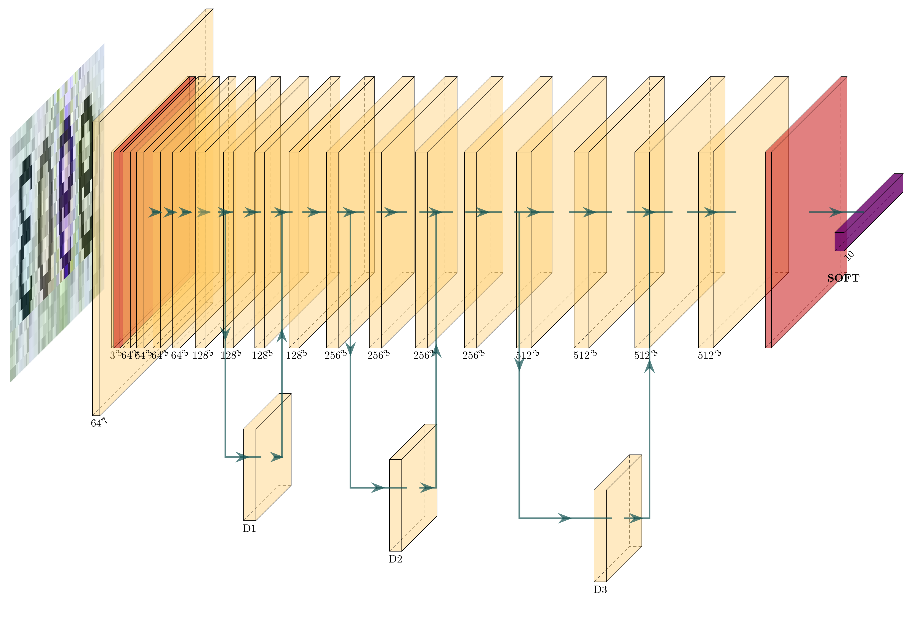

暑期实训-验证码识别/功能介绍
VERIFICATION CODE RECOGNITION / FEATURE
全自动区分计算机和人类的公开图灵测试（CAPTCHA），俗称验证码，是一种区分用户是计算机或人的公共全自动程序。详情见
wiki
。这里有一个例子

本网络使用ResNet结构，其可视化展示如下图

全自动区分计算机和人类的公开图灵测试（CAPTCHA），俗称验证码，是一种区分用户是计算机或人的公共全自动程序。详情见
wiki
。这里有一个例子
本网络使用ResNet结构，其可视化展示如下图